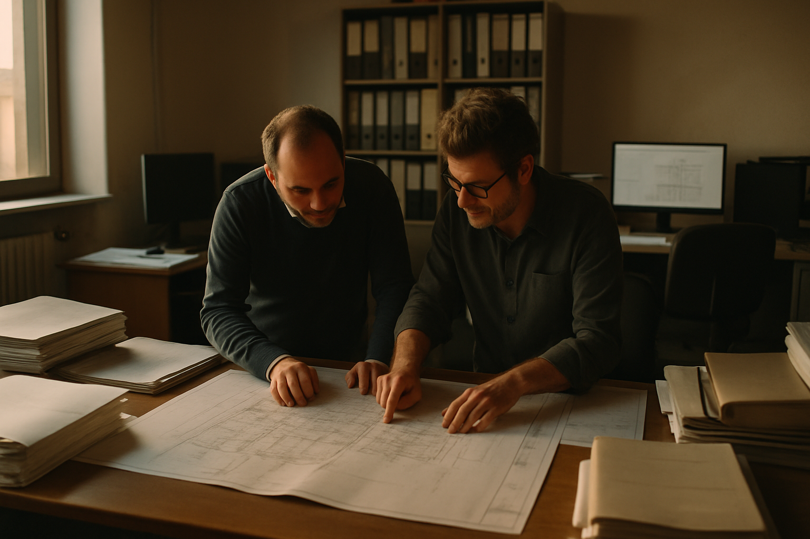

Blog · AI ingegneria & progettazione
Uno studio di ingegneria con 8 tecnici può spendere 25-30 ore settimanali solo ad assemblare e verificare documenti di cantiere. Non è un problema di organizzazione: è strutturale. Capitolati, PSC, relazioni tecniche e SAL devono restare coerenti tra loro mentre il cantiere avanza — e farlo a mano costa caro, soprattutto quando costa il tempo di chi dovrebbe progettare.

Uno studio di ingegneria strutturale apre in media 4-6 tavoli documentali in contemporanea: capitolato speciale d'appalto, Piano di Sicurezza e Coordinamento, relazioni tecniche, Stato Avanzamento Lavori. Ognuno si aggiorna in modo indipendente. Ognuno deve restare coerente con gli altri. Il problema non è scrivere un documento: è tenere allineati tutti e quattro mentre il cantiere avanza e le normative di riferimento cambiano.
La coerenza normativa richiede tempo lungo e ripetitivo. Controllare che una relazione tecnica rispetti le NTC 2018 e gli Eurocodici significa incrociare articoli, tabelle e valori numerici su documenti che superano spesso le 200 pagine. Un tecnico esperto impiega 3-5 ore solo per la verifica di una relazione di media complessità. Moltiplicare per i progetti aperti in parallelo: uno studio con 8 tecnici e 12 cantieri attivi genera 15-20 ore settimanali di lavoro dedicato esclusivamente al controllo e al riassemblaggio, non alla progettazione.
Il costo reale non è il tempo del singolo controllo. È il ritardo a valle: un SAL presentato in ritardo blocca la liquidazione, un PSC con mancanze segnalate dall'ente appaltante genera richieste di integrazione che fermano il cantiere. Studi strutturali e coordinatori della sicurezza conoscono bene questi colli di bottiglia. Una relazione tecnica incompleta rispetto alle NTC riparte da zero, consumando giorni di rielaborazione. Quello che manca è uno strumento che elimini questi colli strutturalmente.
La risposta più comune al problema del carico documentale è costruire una libreria di template Word ben strutturati, magari abbinati a un gestionale di studio che tiene traccia delle scadenze. Funziona fino a un certo punto: riduce il tempo di composizione di un documento nuovo, standardizza il formato, evita di riscrivere le stesse clausole ogni volta. Per uno studio che lavora su progetti ripetitivi e di bassa complessità, può bastare.
Il problema nasce quando i progetti cambiano: appaltante diverso, normativa locale aggiornata, categorie di lavorazioni non previste nei template. Il template diventa un punto di partenza che va adattato manualmente, e la verifica di coerenza torna a carico del tecnico. I gestionali tracciano scadenze e stati di avanzamento, ma non leggono il contenuto dei documenti: non sanno se la relazione di calcolo cita il valore sbagliato per una categoria sismica, e non possono produrre la lista di mancanze del PSC analizzando i documenti di progetto. Restano ciechi ai contenuti tecnici veri.
Una stima conservativa: i template coprono il 40-50% del lavoro documentale su progetti standard. Sul restante 50-60% — varianti, integrazioni, verifiche di contenuto, incroci normativi — il tecnico lavora ancora a mano. È esattamente quella metà che consuma il tempo di chi costa di più nello studio. La soluzione non è affinare i template: è affidare al computer il compito di leggere e verificare quello che i template non sanno controllare.
La categoria di strumento che risolve questo problema è un sistema di AI specializzato in ingegneria strutturale e progettazione: non un assistente generico, ma una soluzione che legge i documenti tecnici in ingresso, li incrocia con il corpus normativo di riferimento (NTC 2018, Eurocodici, normative di settore), e produce in uscita documenti verificati o liste strutturate di anomalie e mancanze. La differenza rispetto a un chatbot generico è sostanziale: un modello generico non sa distinguere una categoria di lavorazione da un articolo del capitolato, né sa che un certo valore di accelerazione spettrale è fuori range per la zona sismica dichiarata nel progetto.
Un sistema di questo tipo si costruisce su tre componenti. Il primo è una base di conoscenza normativa aggiornata: le NTC 2018, gli Eurocodici nelle edizioni vigenti, le circolari applicative. Il secondo è la capacità di leggere e interpretare i documenti del progetto specifico — relazioni, computi, elaborati grafici in formato testuale — per estrarre i riferimenti incrociabili. Il terzo è un motore di generazione documentale che produce capitolati, PSC e SAL partendo dall'incrocio tra la base normativa e i dati del singolo cantiere, non da un template fisso. La differenza è cruciale: i template operano per esclusione (cosa non scrivo), il motore normativo opera per inclusione (cosa devo controllare secondo la norma).
Costruire questo sistema richiede mesi di lavoro specialistico: mapping normativo dettagliato, fine-tuning sui documenti tecnici reali di settore, test su casi concreti con professionisti che validano l'output. Non è qualcosa che si assembla in un pomeriggio con un account di un chatbot generico e un foglio Excel. Chi lo fa senza esperienza specifica ottiene uno strumento che genera testo plausibile ma non verificabile — e in ingegneria strutturale, un documento plausibile ma sbagliato crea responsabilità. L'apparenza di correttezza senza fondamento normativo è il rischio maggiore.
Uno studio con 8 tecnici e 12 cantieri attivi contemporaneamente gestiva la produzione documentale con due figure dedicate quasi esclusivamente all'assemblaggio e alla verifica. Ogni settimana: 3-4 SAL da sintetizzare dai documenti di cantiere, 1-2 PSC da aggiornare con le mancanze segnalate dal coordinatore, verifiche periodiche sulle relazioni tecniche rispetto alle NTC. Stima interna del carico: circa 25-30 ore settimanali di lavoro tecnico qualificato impiegato su attività di controllo e assemblaggio, non su progettazione. Quello era tempo non recuperabile altrove.
Dopo l'introduzione di un sistema di intelligenza artificiale calibrato sui documenti dello studio — addestrato su 5 anni di archivio progettuale interno e su un corpus normativo completo — lo stesso volume documentale viene gestito in 8-12 ore settimanali. Il sistema legge i documenti di cantiere in ingresso, produce una bozza di SAL strutturata secondo il formato richiesto dall'appaltante con i dati corretti estrapolati da cantiere, genera la lista di mancanze PSC con riferimento agli articoli normativi pertinenti, e segnala le discrepanze nelle relazioni tecniche rispetto ai parametri NTC 2018. Il tecnico revisiona e approva, non assembla da zero. Il risparmio stimato è nell'ordine del 55-65% del tempo documentale, con un picco più alto sui SAL (dove l'assemblaggio è più meccanico) e più contenuto sulle relazioni di calcolo complesse che richiedono scelte progettuali vere.
Detto questo: non sempre va così. Progetti con documentazione di cantiere disomogenea — fogli scritti a mano senza fotocopie leggibili, report non strutturati, comunicazioni via WhatsApp trascritte male — richiedono un lavoro di normalizzazione preliminare che riduce il guadagno netto. Il sistema funziona meglio dove esiste già una disciplina documentale minima. Se il cantiere è caotico, l'AI ne amplifica i problemi prima di ridurli. La premessa di successo è che il flusso di input sia ordinato.
| Hai questo | Conviene |
|---|---|
| 1-2 cantieri attivi, documentazione standard, nessuna variante complessa | I template Word esistenti bastano. Un sistema custom non recupera il costo di implementazione. |
| 3-6 cantieri, mix di appaltanti con format diversi, qualche variante normativa | Valuta un tool AI generico di assistenza alla scrittura tecnica. Riduce il carico senza richiedere una configurazione specialistica. |
| 7+ cantieri in parallelo, PSC e SAL ricorrenti, verifiche NTC su relazioni complesse | Un sistema di AI specializzato in ingegneria strutturale ha ROI misurabile in 6-9 mesi. Il risparmio di ore copre l'investimento nel primo anno. |
| Scadenze PSC ravvicinate, richieste di integrazione da enti appaltanti che si accumulano, cantieri a rischio fermo per documentazione incompleta | Il costo del ritardo supera già il costo dell'implementazione. Agire abbassa il break-even a 3-4 mesi e riduce il rischio reputazionale. |
No, e non è quello il punto. Un sistema specializzato in ingegneria produce bozze, segnala anomalie e genera liste di mancanze: il professionista iscritto all'albo rimane l'unico responsabile della verifica finale e della firma. L'AI riduce il tempo che il tecnico spende ad assemblare e controllare manualmente, non sostituisce il giudizio professionale. Chi pensa di usarla per aggirare la responsabilità tecnica sta fraintendendo lo strumento — e si espone a rischi seri. Il valore reale è liberare il tecnico dal lavoro meccanico per concentrarsi sulle decisioni che richiedono competenza e scelta progettuale.
Un sistema ben progettato separa la base di conoscenza normativa dal motore di elaborazione: aggiornare la normativa significa aggiornare quella base, non riscrivere tutto il software. Per le NTC e gli Eurocodici si tratta di interventi periodici — non quotidiani — che uno specialista può eseguire in tempi ragionevoli, solitamente con cadenza annuale o quando escono circolari applicative importanti. Il rischio vero è affidarsi a un sistema "congelato" costruito una volta sola e mai manutenuto: dopo 18-24 mesi senza aggiornamenti, le verifiche normative prodotte diventano inaffidabili e esposte. La manutenzione è parte integrante dell'investimento, non un extra opzionale che si può posticipare.
L'agevolazione Transizione 5.0 copre gli investimenti in beni strumentali e software legati a processi di efficienza e digitalizzazione nelle imprese. Un sistema di AI applicato alla gestione documentale tecnica rientra potenzialmente nella categoria del software per la digitalizzazione dei processi produttivi, a condizione che l'investimento soddisfi i requisiti specifici del piano di risparmio energetico collegato. La pratica richiede una certificazione da parte di un valutatore abilitato secondo i criteri MISE. Prima di procedere, è opportuno verificare con un consulente fiscale se il progetto specifico soddisfa i criteri di accesso: non tutti gli investimenti AI sono automaticamente ammissibili, e la documentazione richiesta deve essere completa e conforme alle linee guida vigenti.
Prossimo passo
Apri K-BOT e in 5 minuti ti diciamo se questa categoria di soluzione fa al caso della tua PMI, oppure se basta uno strumento off-the-shelf. Gratuito.
L'offerta K2-AI sulla categoria: cosa fa, come si integra, tempi e modalità.
Descrivi il tuo caso. K-BOT dice se vale custom o se basta uno strumento standard.
Se preferisci una call diretta, scrivici. Rispondiamo in 24 ore con una lettura onesta.